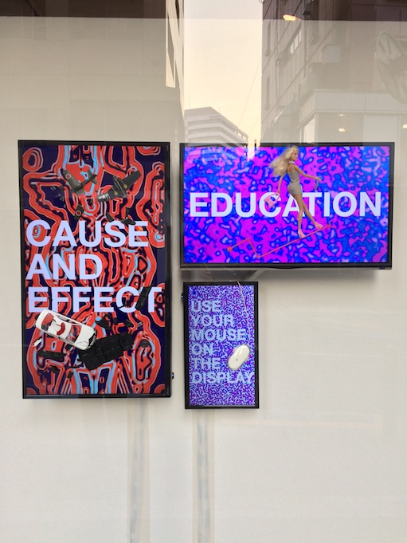

Akira Wakita, Over Display - Modality
Work exhibited at Akira Wakita’s third solo exhibition, “Symptom Visualized”.The work aims to propose a new way of displaying a screen.
Assisted with the positioning of the objects on the screen.
mixed media

Credit
Artist: Akira Wakita
Assistant: Akito Nakano、Ken Ishii